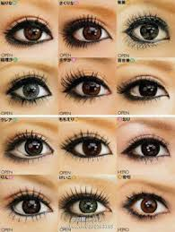
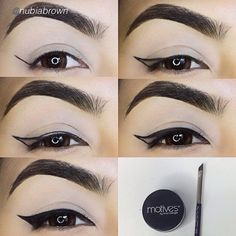

tibi make up
Make up tips eyeliner
- black eye liner pencil and gel is better than liquid eye liner
- you can used wich ever eyeliner you have
- used foundstion first
- then if you wanna start with a simple eye liner thing you can
- their are different type of eyeliner like
- clasic
- smooth
- feline
- bold
- double up
- pin-up
- simple
- luxe
- egypyian
- everyday
- basic
- those are all the different type of eyliner you can do what ever you want and you done with your make up
- simple make up with eyeliner

